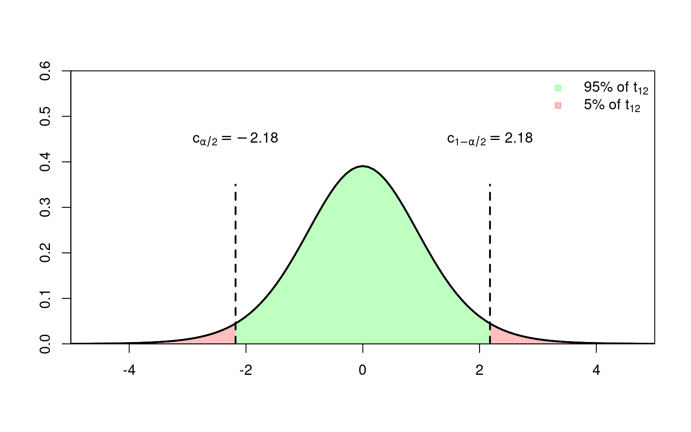

4.3 Testtheory
4.3.1 Significance Level
To actually test the null hypothesis (e.g., H\(_0\): \(R\beta-r=0\) or \(H_0:\beta_k=0\)), we need to have a decision rule on when we will reject and not reject the null hypothesis. This amounts to deciding on a probability with which we are comfortable rejecting the null hypothesis when it is in fact true (Type I error or \(\alpha\) error). The probability of such a Type I error shall be bounded from above by a (small) significance level \(\alpha\), that is \[ P(\text{reject } H_0| H_0\text{ is true})=P(\text{Type I Error})=\alpha \] For a given significance level (e.g., \(\alpha=0.05\)) and a given alternative hypothesis, we can divide the range of all possible values of the test statistic (i.e., \(\mathbb{R}\) since both \(t\in\mathbb{R}\) and \(F\in\mathbb{R}\)) into a and a by using certain quantiles called of the test statistic distribution under the null. We can do this because the test statistics \(t\) and \(F\) have known distributions under the null hypothesis (\(t\overset{H_0}{\sim}t_{n-K}\) and \(F\overset{H_0}{\sim}F(q,n-K)\)); indeed, under Assumption 4\(^\ast\), we know the null distributions for every sample size \(n\). Having decided on the rejection and non-rejection regions, it is a simple matter of seeing where the observed (obs) sample values \(t_{obs}\) or \(F_{obs}\) of the statistics \(t\) or \(F\) are–either in the rejection or in the non-rejection region.
Since the test statistics \(F\) and \(t\) are continuous random variables of which we know the distributions (under Assumptions 1-4\(^\ast\)), we can find critical values such that \[ P(\text{Type I Error})=\alpha \] We call such tests since the probability of a type I error equals the significance level \(\alpha\). Test statistics with \[ P(\text{Type I Error})<\alpha \] are called test statistics; they lead to valid inferences, but will detect a violation of the null hypothesis less often than a non-conservative test. A test statistic with \(P(\text{Type I Error})>\alpha\) leads to inferences!
4.3.2 Critical Value for the \(F\)-Test
The critical value \(c_{1-\alpha}>0\) defines the rejection region, \(]c_{1-\alpha},\infty[\), and non-rejection region, \(]0,c_{1-\alpha}]\) which divide the test-statistic space (here \(\mathbb{R}^+\) since \(F\in\mathbb{R}^+\)) for a given
significance level \(\alpha\in(0,1)\), such that
\[
P(\text{Type I Error})=P_{H_0}\Big(F\in]c_{1-\alpha},\infty[\Big)=\alpha,
\]
where \(c_{1-\alpha}\) is here the \((1-\alpha)\) quantile of the \(F\)-distribution with \((q,n-K)\) degrees of freedom, and where \(P_{H_0}\) means that we compute the probability under the assumption that \(H_0\) is true.

The rejection region describes a range of values of the test statistic \(F\) which we rarely see if the null hypothesis is true (only in at most \(\alpha \cdot 100\%\) cases). If the observed value of the test statistic, \(F_{\text{obs}}\), falls in this region, we will reject the null hypothesis–and hereby, accept Type I errors in at most \(\alpha \cdot 100\%\) of cases.
The non-rejection region describes a range of values of the test statistic \(F\) which we expect to see (in \((1-\alpha) \cdot 100\%\) cases) if the null hypothesis is true. If the observed value of the test statistic, \(F_{\text{obs}}\) falls in this region, we will not reject the null hypothesis.
Not rejecting the null hypothesis does not mean that we can conclude that the null hypothesis is true. We only had no sufficiently strong evidence against the null hypothesis. A violation of the null hypothesis, for instance \(R\beta -r=a\neq 0\), may simply be too small (too small \(a\) value) to stand out from the estimation errors (measured by the standard error) in \(\hat\beta_k\).
Fortunately, you do not need to read old-school distribution tables to find the critical value \(c_{1-\alpha}\), but can simply use
df1 <- 9 # numerator df
df2 <- 120 # denominator df
alpha <- 0.05 # significance level
## Critical value:
crit_value <- qf(p = 1-alpha, df1 = df1, df2 = df2)
crit_value
#> [1] 1.958763Changing the significance level from \(\alpha=0.05\) to \(\alpha=0.01\) makes the critical value \(c_{1-\alpha}\) larger and, therefore, the rejection region smaller (fewer Type I errors)
alpha <- 0.01
## Critical value:
crit_value <- qf(p = 1-alpha, df1 = df1, df2 = df2)
crit_value
#> [1] 2.5585744.3.3 Critical Value(s) for the \(t\)-Test
In case of the \(t\)-test, we need to differentiate between two-sided and one-sided testing.
Two-Sided \(t\)-Test
Two-sided hypothesis: \[\begin{equation*} \begin{array}{ll} H_0: & \beta_k=r \\ H_A: & \beta_k\ne r \end{array} \end{equation*}\] In case of a two-sided \(t\)-test, we reject the null hypothesis if the observed realization of the \(t\)-test, \(t_{obs}\), is from zero either by being sufficiently smaller or greater than \(r\). The corresponding two-sided critical values are denoted by \(-c_{1-\alpha/2}=c_{\alpha/2}<0\) and \(c_{1-\alpha/2}>0\), where \(c_{1-\alpha/2}>0\) is the \((1-\alpha/2)\) quantile of the \(t\)-distribution with \((n-K)\) degrees of freedom, and where \(-c_{1-\alpha/2}=c_{\alpha/2}\) due to the symmetry of the \(t\)-distribution. These critical values defines the following rejection and the non-rejection regions \[\begin{align*} \text{rejection region:}&\hspace{1cm}]-\infty,c_{\alpha/2}[\;\;\cup\;\;]c_{1-\alpha/2}, \infty[\\ \text{non-rejection region:}&\hspace{1cm}[c_{\alpha/2},c_{1-\alpha/2}]. \end{align*}\] For this rejection region it holds true that \[ P(\text{Type I Error})=P_{H_0}\Big(t\in\;]-\infty,c_{\alpha/2}[\;\;\cup\;\;]c_{1-\alpha/2}, \infty[\Big)=\alpha. \] 
One-Sided \(t\)-Test
One-sided hypothesis: \[\begin{equation*} \begin{array}{lll} &H_0: & \beta_k =r\\ &H_A: & \beta_k >r\\ (\text{or}&H_A: & \beta_k< r) \end{array} \end{equation*}\] In case of a one-sided \(t\)-test, we will reject the null if \(t_{obs}\) is sufficiently ``far away’’ from zero in the relevant direction of \(H_A\). The corresponding critical value is either \(-c_{1-\alpha}\) (\(H_A:\beta_k< r\)) or \(c_{1-\alpha}\) (\(H_A:\beta_k> r\)), where \(c_{1-\alpha}\) is the \((1-\alpha)\) quantile of the \(t\)-distribution with \((n-K)\) degrees of freedom, and where \(-c_{1-\alpha}=c_{\alpha}\) due to the symmetry of the \(t\)-distribution. The critical value \(c_{1-\alpha}\) defines the following rejection and the non-rejection regions:
For \(H_0: \beta_k=0\) versus\(H_A: \beta_k < 0\): \[\begin{align*} \text{rejection region:} &\hspace{2cm}]-\infty,c_{\alpha}[ \\ \text{non-rejection region:}&\hspace{2cm}[c_{\alpha},\infty[ \end{align*}\] such that \[ P(\text{Type I Error})=P_{H_0}\Big(t\in\;]-\infty,c_{\alpha}[\Big)=\alpha. \]
For \(H_0: \beta_k=0\)versus\(H_A: \beta_k > 0\):
\[\begin{align*}
\text{rejection region:}&\hspace{1cm}]c_{1-\alpha}, \infty[\\
\text{non-rejection region:}&\hspace{1cm}]-\infty,c_{1-\alpha}]
\end{align*}\]
such that
\[
P(\text{Type I Error})=P_{H_0}\Big(t\in\;]c_{1-\alpha}, \infty[\Big)=\alpha.
\]

Fortunately, you do not need to read old-school distribution tables to find the critical values, but you can simply use
df <- 16 # degrees of freedom
alpha <- 0.05 # significance level
## One-sided critical value (= (1-alpha) quantile):
c_oneSided <- qt(p = 1-alpha, df = df)
c_oneSided
#> [1] 1.745884
## Two-sided critical value (= (1-alpha/2) quantile):
c_twoSided <- qt(p = 1-alpha/2, df = df)
## lower critical value
-c_twoSided
#> [1] -2.119905
## upper critical value
c_twoSided
#> [1] 2.119905